Детальна документація по функціоналу DrawingBot
1.1 Промтинг - основа основ
Давайте розберемо саме просте. Отже, промтинг, давайте розглянемо на прикладі, що це.
Давайте згенеруємо дівчину з зеленим волоссям, для цього треба написати і надіслати:
/draw 1girl, green eyes
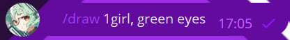
1.2 Промтинг - результат
Через 5-15 секунд вам пирйде результат, в мене вийшов такий результат:
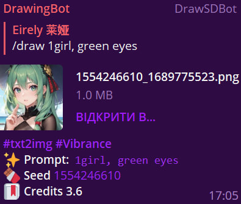
1.3 Промтинг - #txt2img (Текст в картинку)
Це функція ШІ Stable Diffusion дозволяє перетворити текст в картинку, цей текст і є нашим промтом.
1.4 Промтинг - #Vibrance (Модель)
Модель - це та частина нейромережі, яку тренують на конкретних зображеннях і завдяки яким нейромережа знає, що їй потрібно малювати, коли її просять згенерувати людину, котика, машину чи піцу.
2.1 Функціонал - Model
В DrawingBot існує 7 моделей, з них:
1. Akasha
2. Tranquility
3. Aika
4. Yami
5. Furry
6. Chroma
7. Vibrance (Стандартна)
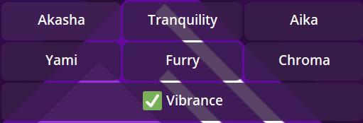
Вибрати модель можна так:
1. Пишемо промт:
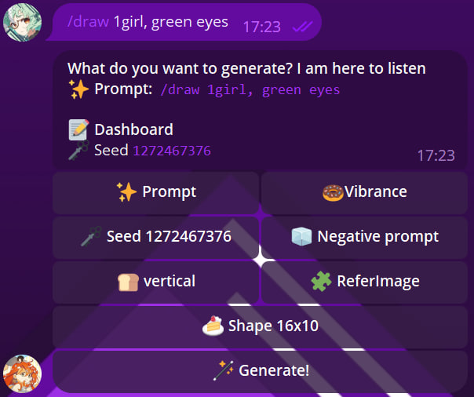
2. Нажимаємо на кнопку з картинкою пончика:
3. Вибираємо модель і нажимаємо кнопку "Back":
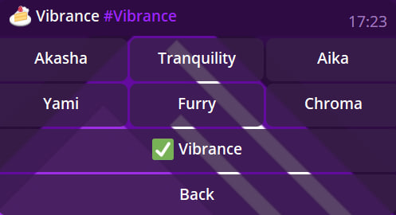
4. Тепер на кнопці де був намальований пончик, буде написана модель яку ви виьрали. В залежності від моделі результат буде мати різну стилістику. Шукайте модель яка сподобаться вам найбільше.
2.2 Функціонал - Seed
Кнопка "Seed" означає що нейромережа буде генерувати картинку по спеціальному ключу генерації, працює так само як в майнкрафті, якщо натиснути на кнопку "Seed", а потім написати свій сід то картинка зегенерується з сідом який ви вказали. (Можна побачити приклад роботи на скріншотах прикріплених нижче)
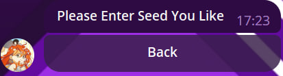
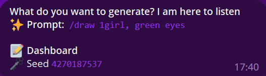
2.2 Функціонал - Negative promt
"Negative promt" - друга сама важлива функція після звичайного промта. Розберемося як він працює:
Давайте візьмемо набагато важчий і більший промт:
/draw masterpiece, best quality, 1girl, small breasts, solo, short hair, green hair, hair between eyes, orange eyes, glasses, semi_round eyewear, white background, school uniform, white uniform, ((close up face)), thin neck, anime style, beret, closed one eye, white flowerОсь який результат ми отримали:
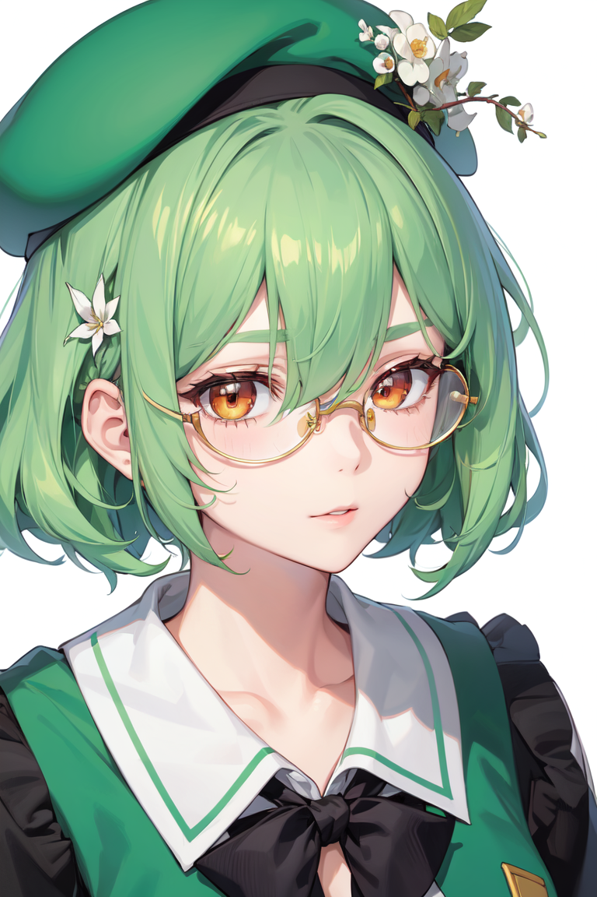
DownloadОтже, отримавши картинку, і порівнявши з нашим промтом, ми можемо побачити, що в нашому промті немає промта який малював би бантик на одязі. Як це виправити? Для цього нам і потрібен "Negative promt".
Для початку треба визначитися, що на НЕ треба на арті (bow on neck, bow on uniform)
Це нам і треба написати в "Negative promt":
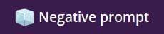
Пишемо наш "Negative promt":
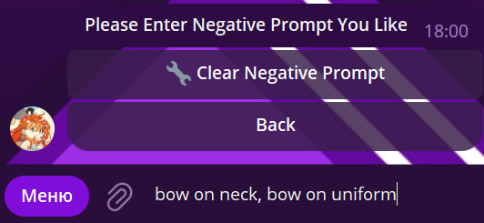
Через кнопку: "🔧 Clear Negative Promt" можна очистити ваш "Negative promt".
Ми додали "Negative promt" Тепер спробуємо зегенерувати арт.
Ось який результат ми отримали:
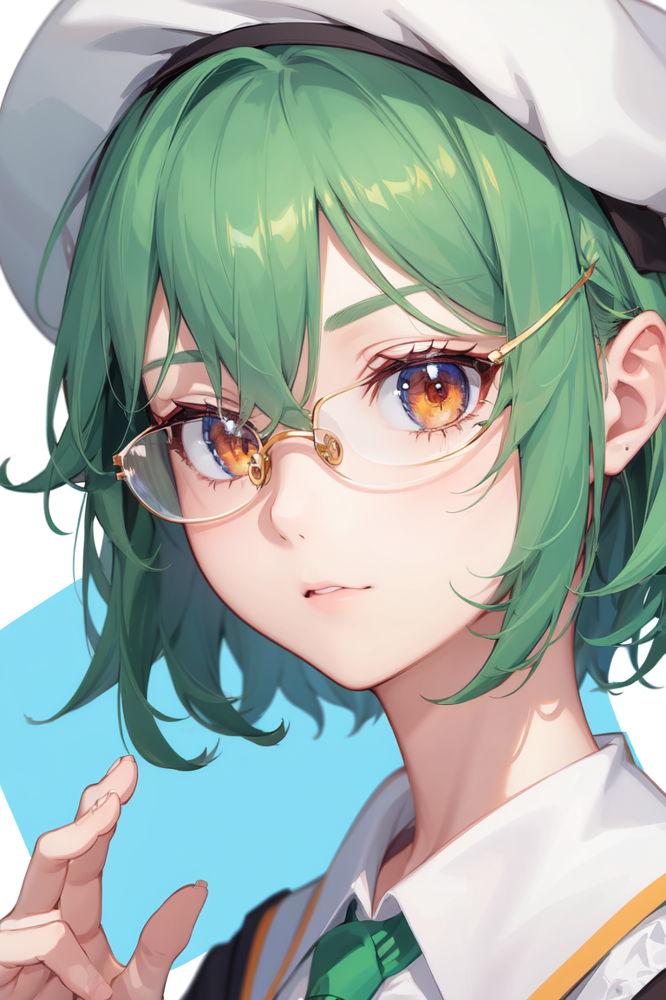
DownloadТепер як ви можете побачити бантика в нас немає, замість нього нейромережа намалювала галстук, якщо не хочете і галстук, то дописуйте це в "Negative promt".
2.3 Функціонал - орієнтація
Генерує вертекальне зообження:
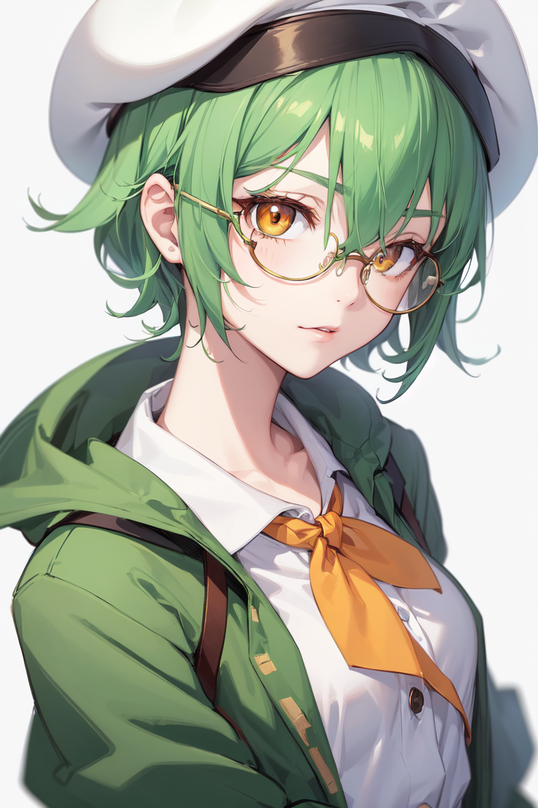
DownloadГенерує горизонтальне зообження:
Download2.3 Функціонал - Refimage
"Refimage" - може бути викорстаним для того щоб скопіювати позу з іншої картинки, для цього цю функцію частіше всього і використувують
Візьмемо цю картинку як референс пози:
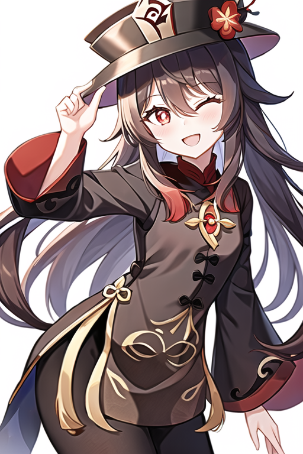
DownloadВідсилаємо картинку "Референс" для пози, а кнопку "🍪 ControlNet Mode:None" не чіпаємо.
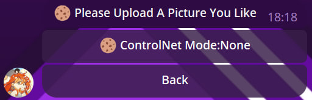
В вас після попереднього кроку з'явиться ця кнопка:

Якщо в вас ця кнопка не має такого ж значення як в мене, то поставте значення: "0.95"
Після цього нажимаємо на кнопку генерації і чекаємо на результат, на який ми зараз подивимося:
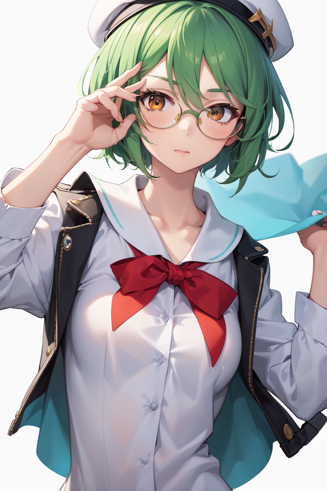
Download